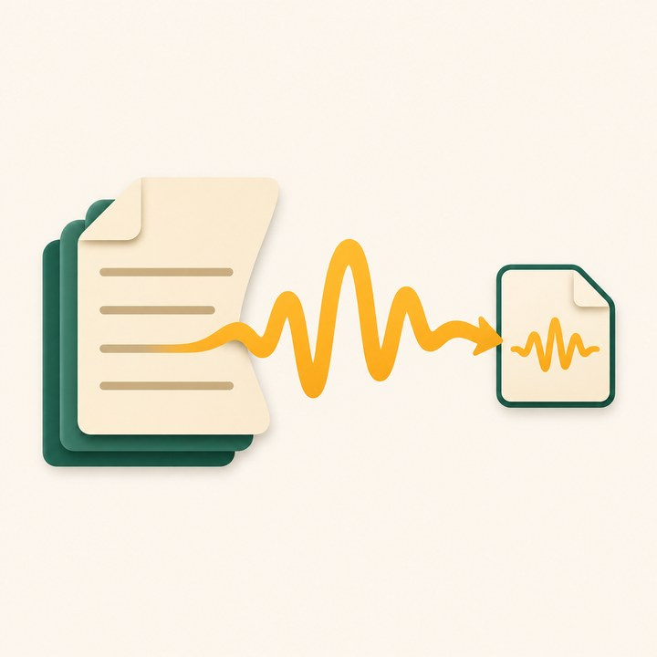

iPhone・iPad・Android の読み上げ
書いた文を、
声のファイルに。
自分の原稿・台本・メモを、端末の声で読み上げて、音声のファイル（m4a）にする道具です。長い文も止まらず、読みを間違える語は辞書で直せます。文章は端末の外に送りません。
App Store・Google Play で配信予定買い切りで全部の機能が使えます。月額・アプリ内課金・広告はありません。

こんな困りごとのために
途中で止まる
文ごとに声にしてつなぐので、長い原稿も最後まで。何文目かが見えます。
読みを間違える
語を長押しして読みを入れると、その場で聞いて確かめられます。本文は変わりません。
月額しかない・時間の制限
買い切りで、使う時間の制限もありません。
耳で校正したい
文のあと・段落のあとの間を選べるので、聞き取りやすく。
音声で持ち歩きたい
m4a で保存・共有・ファイル App に。
記号の意味が分からない
ボタンには文字を付けています。
できること
| 声 | 端末に入っている声・速さ・高さ・文と段落の間 |
|---|---|
| 読み | 長押しで読みを直す・全体の辞書と原稿だけの辞書・CSV |
| ファイル | m4a・再生・共有・ファイル App に保存 |
| データ | iCloud Drive の毎日の控え（原稿と辞書）・アカウントなし・解析と広告なし |
使い方・プライバシーポリシー・利用規約もご覧ください。